VLM · CLIP · truy xuất · sinh mô tả · hỏi đáp ảnh · grounding · mô hình đa phương thức
Trường ĐH Công nghệ · Đại học Quốc gia Hà Nội
Từ nhãn cố định sang giao tiếp bằng ngôn ngữ tự nhiên.
Học không gian chung cho ảnh và văn bản bằng loss tương phản.
Bộ mã hóa ảnh, bộ chuyển đổi, LLM và tinh chỉnh theo lệnh.
Sai lệch, ảo giác, đếm, quan hệ không gian, OCR và thiên lệch.
Bài học nối các bài phân loại, phát hiện, phân vùng và tạo sinh với hướng mô hình nền đa phương thức.
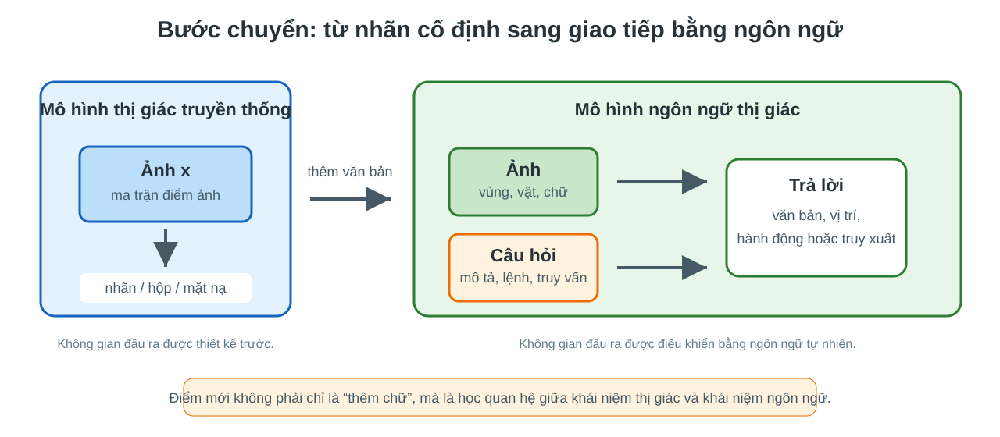
VLM khác mô hình phân loại, phát hiện và phân vùng ảnh truyền thống ở không gian đầu ra và cách dùng điều kiện ngôn ngữ.
Ảnh và văn bản được ánh xạ vào cùng không gian embedding; cặp đúng gần nhau, cặp sai xa nhau.
Bộ mã hóa ảnh, bộ chuyển đổi, LLM, token ảnh và tinh chỉnh theo lệnh.
Ảo giác, quan hệ không gian, đếm, OCR, thiên lệch dữ liệu và cách đánh giá.
Không gian đầu ra · Điều kiện ngôn ngữ · Tác vụ thị giác-ngôn ngữ · Dữ liệu ghép cặp
Bước chuyển quan trọng: mô hình không chỉ gán nhãn ảnh; nó phải hiểu ý định được viết bằng ngôn ngữ.
VLM mở rộng tập lớp bằng mô tả văn bản, nhưng vẫn cần biểu diễn ảnh tốt.
VLM hiểu câu truy vấn; detector và segmenter giúp định vị chính xác.
Văn bản điều khiển mô hình sinh; biểu diễn ảnh-văn bản là cầu nối.
VLM là lớp giao tiếp và suy luận trên nền các biểu diễn thị giác đã học từ các bài trước.
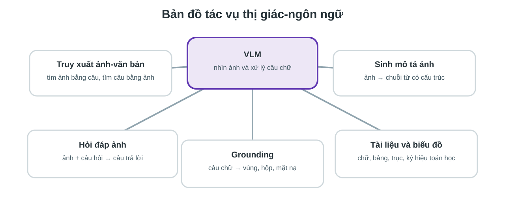
Cùng là VLM, nhưng mỗi tác vụ yêu cầu đầu ra và loss khác nhau.
Một hệ embedding tốt chưa đủ để tạo câu trả lời tốt; sinh ngôn ngữ là một bài toán khác.
Ảnh trên web thường đi kèm chú thích, tiêu đề, văn bản thay thế hoặc đoạn mô tả.
Tín hiệu nhiều nhưng nhiễu: câu có thể không mô tả trực tiếp ảnh.
Hộp, mặt nạ, câu hỏi-đáp và vùng bám theo câu cần gán nhãn thủ công hoặc bán tự động.
Định vị tốt thường cần dữ liệu định vị tốt.
Lý do CLIP quan trọng: nó tận dụng được khối lượng lớn cặp ảnh-văn bản thô.
VLM dùng ngôn ngữ làm điều kiện cho bài toán thị giác.
Ảnh và văn bản vốn nằm trong hai không gian rất khác nhau.
CLIP học một không gian chung để đo sự phù hợp ảnh-văn bản.
Hai bộ mã hóa · Không gian embedding chung · Loss tương phản · Zero-shot · Truy xuất
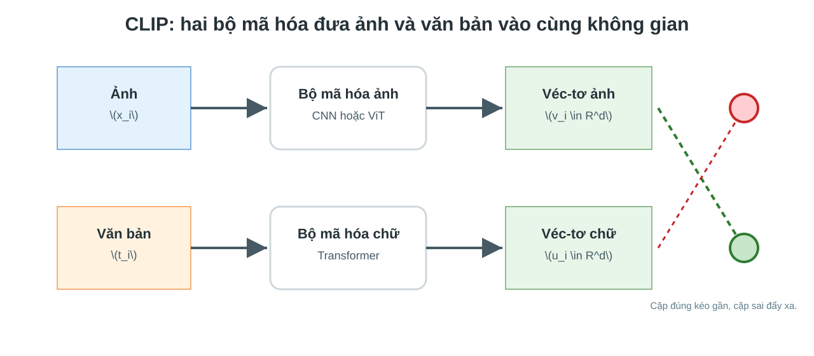
Cặp ảnh-văn bản đúng được kéo gần nhau; các cặp sai trong cùng lô được đẩy ra xa.
Nhận ảnh, sinh véc-tơ \(v_i\). Có thể dùng CNN hoặc ViT.
Nhận chuỗi token, sinh véc-tơ \(u_i\). Thường dùng Transformer.
CLIP là mô hình căn chỉnh biểu diễn, không phải mô hình hội thoại.
Đưa véc-tơ lên mặt cầu; tích vô hướng trở thành độ tương tự cosin.
Điều chỉnh độ sắc của phân phối softmax.
Một lô \(N\) cặp tạo ra \(N \times N\) điểm phù hợp.
Mục tiêu không phải dự đoán từng từ, mà là xếp cặp đúng cao hơn mọi cặp sai trong lô.
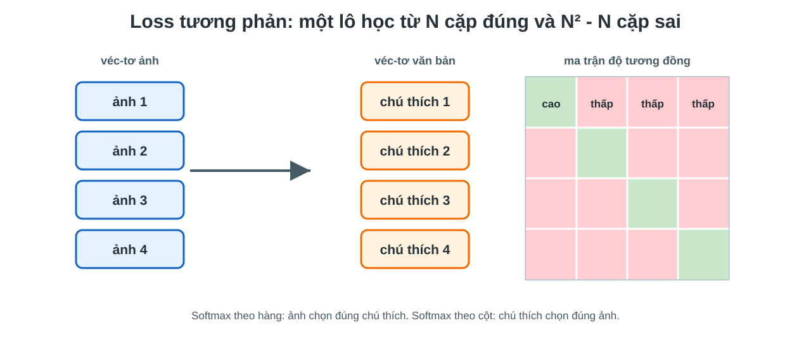
Đường chéo là cặp đúng; ngoài đường chéo là các cặp âm lấy miễn phí từ cùng lô.
Giữ ảnh \(i\), so với tất cả văn bản trong lô.
Nếu văn bản đúng không có xác suất cao nhất, loss tăng.
Mỗi ảnh học cách nhận ra chú thích của chính nó giữa nhiều chú thích sai.
Giữ văn bản \(j\), so với tất cả ảnh trong lô.
Ảnh tìm văn bản và văn bản tìm ảnh đều phải đúng.
CLIP dùng hai chiều truy xuất để không thiên về một phía biểu diễn.
Với mỗi ảnh và mỗi câu, mô hình học một thước đo phù hợp chung thay vì một bộ phân loại riêng cho từng tập dữ liệu.
Đây là lý do CLIP có thể chuyển sang nhiều tác vụ không có nhãn huấn luyện trực tiếp.
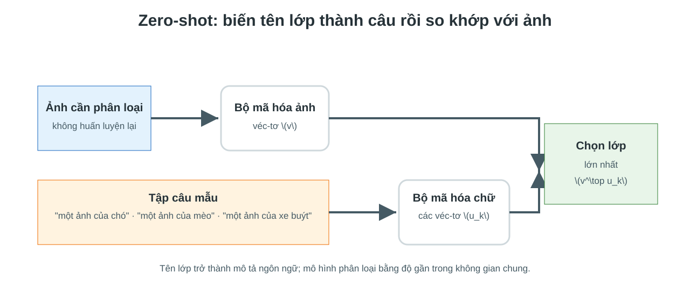
Tên lớp không đi vào tầng phân loại cố định; nó đi qua bộ mã hóa văn bản.
Ngắn, ít ngữ cảnh, dễ lệch với dạng câu đã thấy khi huấn luyện.
Gần với phân phối văn bản tự nhiên hơn, thường ổn định hơn.
Trong CLIP, prompt không chỉ là câu chữ hiển thị; nó là đầu vào quyết định véc-tơ lớp.
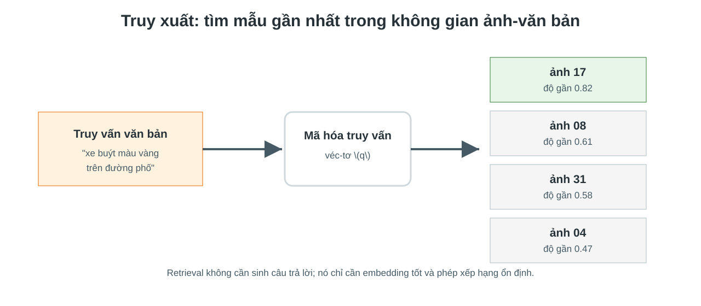
Cùng một không gian embedding hỗ trợ cả tìm ảnh bằng câu và tìm câu bằng ảnh.
Đo độ chính xác ở vị trí đầu.
Đo khả năng không bỏ sót đáp án.
Không kiểm tra sinh câu hay suy luận.
Retrieval đánh giá khả năng xếp hạng, không đánh giá năng lực hội thoại.
Chỉ cần viết mô tả lớp mới, không cần thay tầng phân loại.
Người dùng tìm bằng câu mô tả thay vì mã lớp.
Embedding ảnh có thể dùng cho nhiều bài toán phía sau.
Ý tưởng căn chỉnh ảnh-văn bản là nền cho sinh ảnh theo mô tả.
CLIP cho điểm phù hợp, không tạo chuỗi trả lời chi tiết.
Các quan hệ như “bên trái”, “đằng sau”, “đang cầm” có thể bị nhầm.
Embedding toàn ảnh không trực tiếp cho hộp hay mặt nạ chính xác.
Thiên lệch và nhiễu trong mô tả web đi vào biểu diễn.
CLIP là nền rất mạnh, nhưng chưa phải VLM hội thoại hoàn chỉnh.
Không gian chung để đo ảnh và văn bản có khớp nhau không.
Sinh câu trả lời, theo dõi hội thoại và giải thích theo lệnh.
Cần ghép biểu diễn ảnh với mô hình ngôn ngữ sinh.
Captioning · VQA · Token ảnh · Chú ý chéo · Loss sinh ngôn ngữ
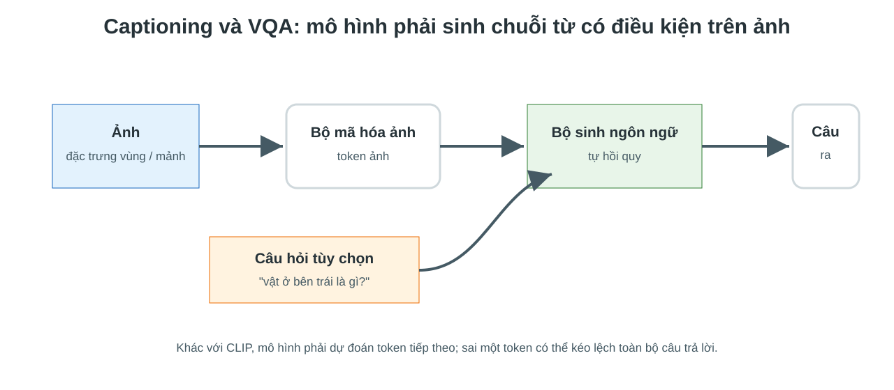
Câu trả lời được sinh từng token; ảnh và câu hỏi là điều kiện cho quá trình sinh.
Mỗi từ được dự đoán dựa trên ảnh và các từ đã sinh trước đó. Mô hình cần vừa nhìn đúng, vừa nói đúng ngữ pháp.
Captioning khác phân loại vì đầu ra có độ dài biến thiên và phụ thuộc thứ tự token.
Dùng từ đúng trước đó làm ngữ cảnh, rồi bắt mô hình dự đoán từ đúng tiếp theo.
Mô hình dùng chính từ đã sinh; lỗi sớm có thể lan sang các token sau.
Loss token đo độ khớp với một câu chuẩn, nhưng một ảnh có thể có nhiều mô tả đúng.
Cung cấp bằng chứng thị giác.
Xác định vùng và loại thông tin cần trả lời.
Có thể là ngắn, dài, giải thích hoặc suy luận nhiều bước.
VQA khó hơn captioning vì mô hình phải chọn thông tin liên quan đến câu hỏi, không mô tả toàn cảnh.
Trạng thái ngôn ngữ hỏi: cần nhìn phần nào của ảnh?
Đặc trưng ảnh cung cấp bằng chứng để cập nhật token chữ.
Chú ý chéo là cơ chế cho phép câu hỏi tập trung vào các vùng ảnh khác nhau.
Token ảnh và token chữ đi chung từ đầu trong một Transformer.
Mô hình chữ truy cập token ảnh qua các tầng chú ý riêng.
Token ảnh được đưa vào LLM như một đoạn ngữ cảnh đặc biệt.
Các kiến trúc khác nhau chủ yếu ở cách token ảnh được đưa vào dòng xử lý ngôn ngữ.
LLM đã học cú pháp, tri thức phổ thông, định dạng trả lời và hội thoại.
Huấn luyện một mô hình ảnh-ngôn ngữ từ đầu rất tốn dữ liệu và tính toán.
Cùng một mô hình có thể trả lời ngắn, giải thích dài, lập bảng hoặc viết mã giả.
LLM có thể nói trôi chảy ngay cả khi bằng chứng ảnh không đủ.
Bộ mã hóa ảnh · Token ảnh · Bộ chiếu · Bộ rút gọn · LLM · Tinh chỉnh theo lệnh
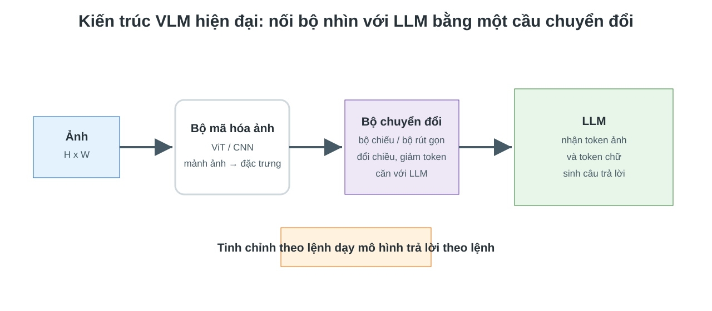
Nhiều VLM hiện đại không huấn luyện mọi thứ từ đầu; chúng nối các mô hình đã huấn luyện trước.
Giữ thiên kiến cục bộ và dịch chuyển; phù hợp đặc trưng không gian.
Mạnh ở chi tiết cục bộ, nhưng ít linh hoạt hơn với token hóa chuỗi.
Chia ảnh thành mảnh, xử lý bằng tự chú ý; dễ chuyển thành token ảnh.
Phổ biến trong VLM vì khớp tự nhiên với LLM dạng token.
Nếu bộ mã hóa ảnh không giữ đủ thông tin, LLM phía sau không thể khôi phục chi tiết đã mất.
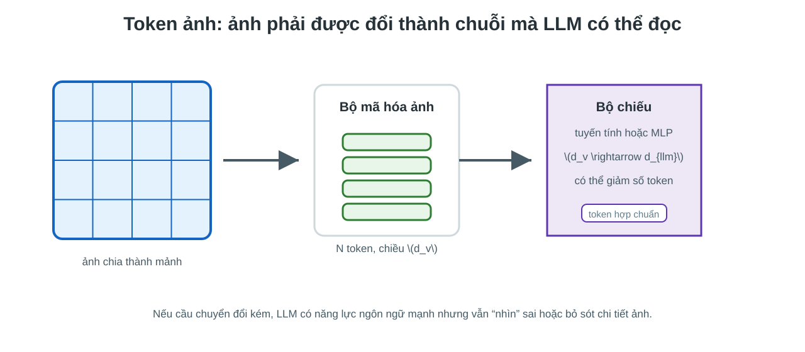
Ảnh phải được đổi thành chuỗi token có cùng chiều biểu diễn với LLM.
Đặc trưng ảnh có chiều \(d_v\), LLM cần chiều \(d_{llm}\).
Token ảnh phải nằm trong vùng biểu diễn mà LLM có thể dùng để sinh chữ.
Một MLP nhỏ có thể là cầu nối quan trọng giữa thị giác và ngôn ngữ.
Ảnh độ phân giải cao sinh rất nhiều token. LLM xử lý chuỗi dài tốn bộ nhớ và thời gian.
Dùng một tập truy vấn học được để rút gọn token ảnh thành số lượng cố định.
Giảm token là đổi chi tiết thị giác lấy khả năng xử lý chuỗi dài hơn.
| Chiến lược | Huấn luyện gì? | Lợi ích | Đánh đổi |
|---|---|---|---|
| Đóng băng nhiều | chủ yếu bộ chiếu | rẻ, ổn định | khả năng thích nghi hạn chế |
| Tinh chỉnh một phần | bộ chuyển đổi, tầng cuối | cân bằng chi phí và chất lượng | cần kiểm soát quên kiến thức |
| Tinh chỉnh toàn bộ | bộ mã hóa ảnh và LLM | mạnh khi có dữ liệu lớn | rất tốn tài nguyên |
Nhiều hệ VLM thực tế chọn đóng băng mô hình lớn và học cầu nối trước.
Ghép đặc trưng ảnh với không gian LLM bằng dữ liệu ảnh-mô tả.
Mục tiêu: LLM đọc được token ảnh.
Dùng dữ liệu ảnh-lệnh-trả lời để dạy cách đáp ứng yêu cầu người dùng.
Mục tiêu: trả lời đúng dạng, đúng ý định.
Căn chỉnh giúp mô hình nhìn; tinh chỉnh theo lệnh giúp mô hình đối thoại theo ảnh.
Cặp ảnh-mô tả: \((x, c)\). Mô tả thường là chú thích ngắn, chưa phải hội thoại.
Ví dụ: ảnh một cảnh đường phố và câu “một xe buýt đang dừng cạnh lề đường”.
Đóng băng bộ mã hóa ảnh và LLM; huấn luyện bộ chiếu hoặc bộ rút gọn.
Mục tiêu là đưa token ảnh vào đúng “ngôn ngữ nội bộ” của LLM.
Giai đoạn căn chỉnh không dạy mô hình hội thoại; nó dạy LLM đọc được biểu diễn ảnh.
Dùng loss kiểu CLIP để kéo ảnh và mô tả đúng lại gần nhau.
Dùng loss sinh chú thích để LLM dự đoán mô tả dựa trên token ảnh.
Hai cách đặt loss khác nhau: một cách học thước đo phù hợp, một cách học đưa ảnh vào dòng sinh ngôn ngữ.
Bộ ba \((x, q, a)\): ảnh, lệnh hoặc câu hỏi, và câu trả lời chuẩn.
Dữ liệu có thể gồm mô tả, hỏi đáp, suy luận biểu đồ, OCR hoặc grounding dạng văn bản.
Huấn luyện bộ chiếu và một phần LLM; có thể dùng LoRA để giảm chi phí.
Mục tiêu là trả lời đúng yêu cầu, không chỉ mô tả ảnh chung chung.
Giai đoạn tinh chỉnh theo lệnh biến mô hình đã biết nhìn thành mô hình biết làm theo yêu cầu thị giác-ngôn ngữ.
| Tiêu chí | Giai đoạn 1: căn chỉnh | Giai đoạn 2: tinh chỉnh theo lệnh |
|---|---|---|
| Đầu vào | ảnh và mô tả | ảnh, lệnh, câu trả lời |
| Năng lực học | LLM đọc được token ảnh | LLM trả lời đúng ý định |
| Loss chính | tương phản hoặc sinh mô tả | entropy chéo trên đáp án |
| Lỗi nếu thiếu | mô hình không hiểu token ảnh | mô hình nhìn được nhưng trả lời sai dạng |
Căn chỉnh là điều kiện cần để nhìn; tinh chỉnh theo lệnh là điều kiện để tương tác được với người dùng.
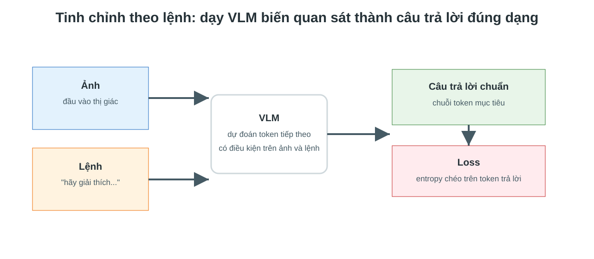
Dữ liệu huấn luyện có dạng ảnh, lệnh và câu trả lời chuẩn.
Thông thường không phạt mô hình vì token ảnh hoặc token lệnh; loss tập trung vào đáp án.
Nếu dữ liệu trả lời kém, mô hình học cách nói hay nhưng không bám ảnh.
Tinh chỉnh theo lệnh là huấn luyện sinh ngôn ngữ có điều kiện trên ảnh và lệnh.
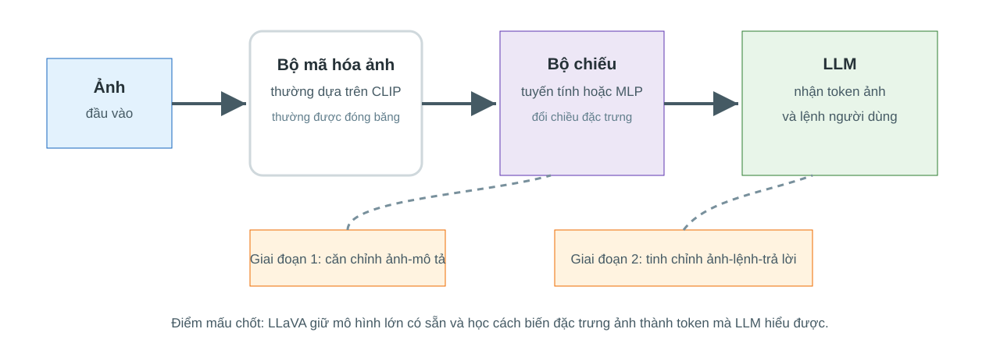
Dùng bộ mã hóa ảnh đã huấn luyện trước, thường dựa trên CLIP.
Một bộ chiếu ánh xạ đặc trưng ảnh sang chiều của LLM.
Sinh câu trả lời theo lệnh, dựa trên token ảnh và token chữ.
Điểm mạnh của hướng này là tận dụng mô hình có sẵn thay vì xây VLM từ đầu.
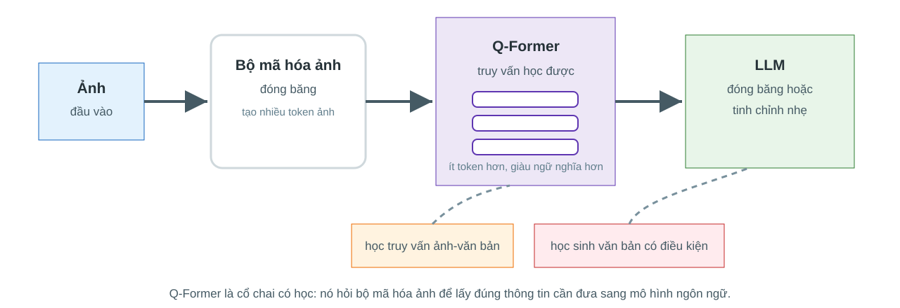
Bộ mã hóa ảnh tạo nhiều đặc trưng; LLM không nên nhận toàn bộ token ảnh thô.
Một mô-đun truy vấn học được rút trích thông tin thị giác cần thiết rồi đưa sang LLM.
Truy vấn trung gian vừa giảm số token, vừa học cách hỏi thông tin ảnh cho mô hình ngôn ngữ.
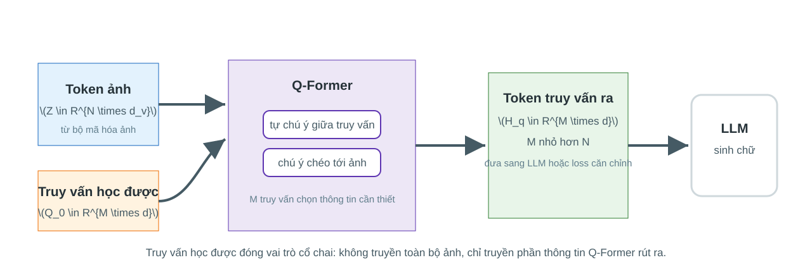
\(Q\) là truy vấn học được, \(Z\) là token ảnh. Mô hình học nên lấy thông tin nào từ ảnh.
Q-Former là bộ lọc có học giữa bộ mã hóa ảnh đóng băng và mô hình ngôn ngữ.
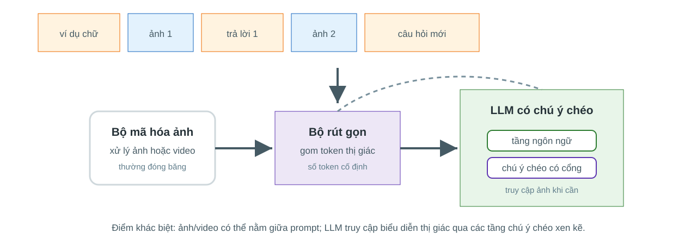
Ảnh, video và văn bản có thể xuất hiện xen kẽ trong cùng một ngữ cảnh.
LLM được thêm các tầng chú ý chéo để truy cập biểu diễn thị giác khi cần.
Flamingo cho thấy một VLM có thể học few-shot từ ví dụ ảnh-văn bản trong prompt.
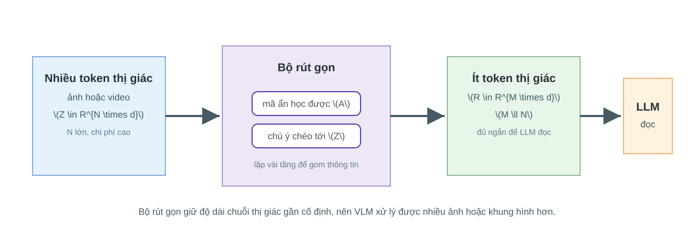
Giảm độ dài chuỗi để LLM xử lý được, nhưng có thể mất chi tiết nhỏ nếu rút gọn quá mạnh.
Bộ rút gọn là lý do Flamingo có thể đưa nhiều ảnh hoặc khung hình vào cùng một ngữ cảnh.
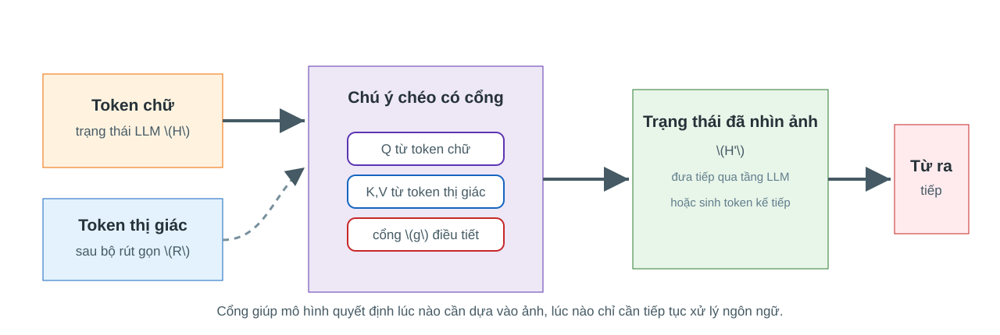
Cổng \(g\) học mức độ đưa thông tin ảnh vào từng tầng, tránh phá vỡ năng lực ngôn ngữ sẵn có.
Chú ý chéo có cổng cho phép LLM nhìn ảnh khi cần, thay vì trộn ảnh vào mọi bước một cách cứng nhắc.
| Hướng | Cách đưa ảnh vào | Phù hợp | Điểm cần chú ý |
|---|---|---|---|
| CLIP | embedding chung | truy xuất, zero-shot | không sinh câu |
| BLIP-2 | truy vấn trung gian | captioning, VQA | cầu nối quyết định chất lượng |
| LLaVA | bộ chiếu sang LLM | hội thoại ảnh | dễ nói trôi chảy nhưng sai ảnh |
Các mô hình khác nhau ở cách cân bằng giữa biểu diễn thị giác, năng lực ngôn ngữ và chi phí huấn luyện.
Định vị theo ngôn ngữ · Open-vocabulary · SAM · OCR · Bố cục · Suy luận thị giác
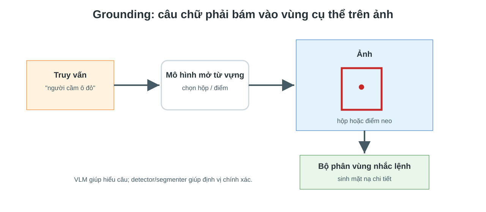
Grounding nối hiểu ngôn ngữ với định vị không gian, nên liên hệ trực tiếp với detection và segmentation.
Huấn luyện với tập lớp cố định. Lớp mới thường cần dữ liệu mới và huấn luyện lại.
Dùng văn bản làm truy vấn lớp. Mô hình tìm vùng phù hợp với mô tả.
Điểm mới là tên lớp trở thành embedding ngôn ngữ, không chỉ là chỉ số trong softmax.
Vùng này có khớp truy vấn không?
Hộp lệch bao xa so với hộp chuẩn?
Điểm ảnh nào thuộc vùng được nói tới?
Ngôn ngữ mở rộng điều kiện, nhưng định vị vẫn phải học bằng các loss hình học và điểm ảnh.
Điểm, hộp, mặt nạ thô hoặc tín hiệu định vị từ mô hình khác.
Một hoặc nhiều mặt nạ ứng viên, kèm điểm chất lượng.
SAM giỏi tách vùng theo nhắc lệnh không gian; VLM giúp biến câu chữ thành nhắc lệnh không gian.
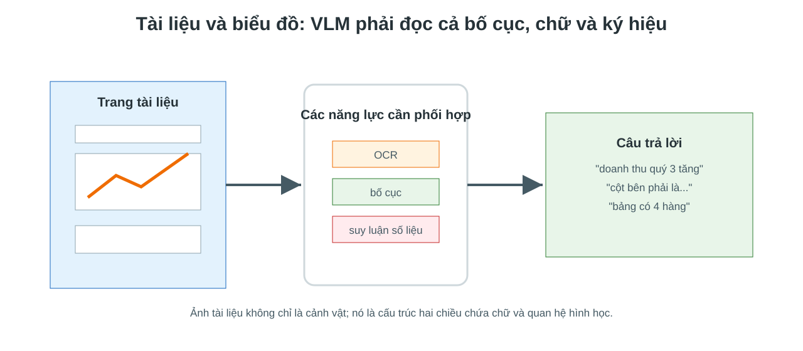
Mô hình phải đọc chữ, hiểu bố cục hai chiều và suy luận trên số liệu.
OCR trả ra chuỗi, nhưng có thể mất vị trí và cấu trúc.
Bảng, cột, chú giải, trục và mũi tên quyết định ý nghĩa.
Câu hỏi thường yêu cầu so sánh, cộng trừ hoặc đọc xu hướng.
Hiểu tài liệu là bài toán thị giác-ngôn ngữ có cấu trúc, không chỉ nhận dạng ký tự.
Câu trả lời đúng về biểu đồ phải bám vào cả chữ, hình học và phép tính.
Tương phản · Sinh ngôn ngữ · Định vị · Hallucination · Spatial reasoning · Counting · Bias
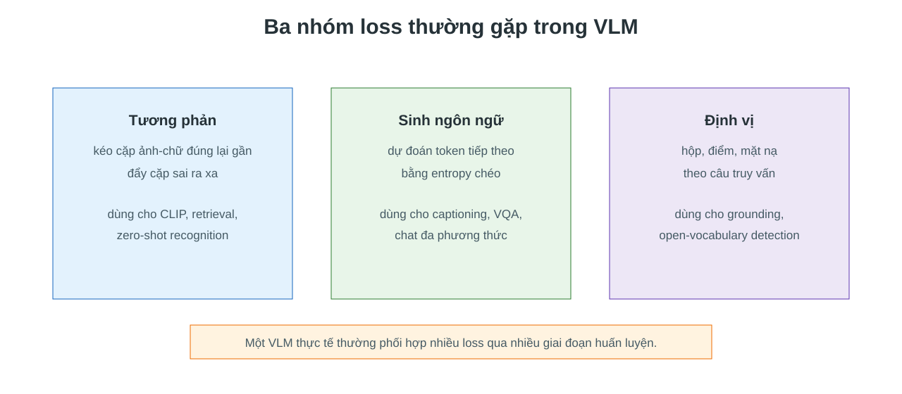
Không có một loss duy nhất cho mọi VLM; loss phụ thuộc tác vụ và kiểu đầu ra.
| Loss | Câu hỏi học được | Đầu ra | Hạn chế |
|---|---|---|---|
| Tương phản | ảnh và câu có khớp không? | điểm gần | không sinh giải thích |
| Entropy chéo token | token tiếp theo là gì? | câu trả lời | có thể bịa trôi chảy |
| Định vị | vùng nào được nói tới? | hộp, điểm, mặt nạ | cần nhãn không gian |
Chọn loss là chọn năng lực mà mô hình được khuyến khích học.
Mô hình có nhận ra vật, hành động, thuộc tính và quan hệ không?
Câu trả lời có bám vào đúng vùng ảnh hoặc đúng đối tượng không?
Có đếm, so sánh, đọc biểu đồ và suy luận không gian đúng không?
Mô hình có biết từ chối khi ảnh không đủ bằng chứng không?
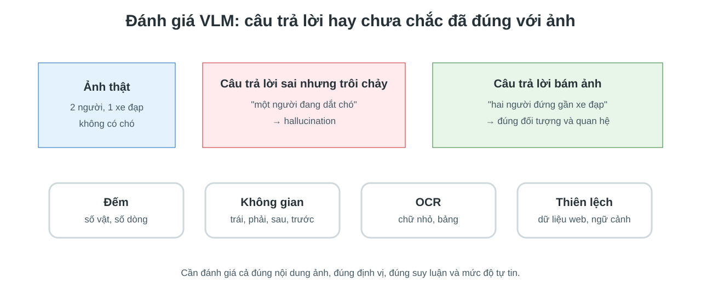
Câu trả lời trôi chảy không đảm bảo rằng nội dung tồn tại trong ảnh.
LLM dựa vào mẫu câu thường gặp thay vì bằng chứng thị giác yếu.
Ảnh bị nén quá mạnh, chữ nhỏ hoặc vật nhỏ không còn biểu diễn rõ.
Câu mô tả web có thể nói về ngữ cảnh, không mô tả chính xác ảnh.
Entropy chéo thưởng cho câu giống dữ liệu, không trực tiếp kiểm chứng với ảnh.
“Có xe đạp không?” thường dựa vào đặc trưng vật thể.
“Xe đạp ở bên trái người nào?” cần bố cục không gian.
Mô hình có thể đúng vật nhưng sai quan hệ giữa các vật.
Một embedding toàn ảnh dễ giữ khái niệm “có gì”, nhưng khó giữ chính xác “ở đâu so với cái gì”.
Mô hình phải phân biệt các đối tượng riêng, xử lý che khuất và trùng lặp.
LLM có thể chọn số có vẻ hợp lý theo ngữ cảnh, không phải số đo từ ảnh.
Đếm tốt thường cần cơ chế định vị hoặc chú ý đến từng cá thể, không chỉ mô tả toàn cảnh.
Chữ nhỏ bị mất khi ảnh được chia mảnh hoặc giảm độ phân giải.
Mô hình có thể đoán từ quen thuộc thay vì đọc chính xác từng ký tự.
Với tài liệu, cần kiểm tra riêng năng lực đọc chữ, giữ bố cục và suy luận trên bảng.
Một số bối cảnh, nhóm người, vật thể hoặc văn hóa xuất hiện nhiều hơn trong dữ liệu.
Chú thích web phản ánh cách người dùng viết, đặt tên, mô tả và định kiến.
VLM học từ tương quan ảnh-văn bản, nên có thể khuếch đại tương quan sai hoặc không công bằng.
Đánh giá VLM phải giống kiểm tra hệ thống thị giác, không chỉ kiểm tra văn phong.
| Mô hình / hướng | Học gì? | Mạnh ở đâu? | Yếu ở đâu? |
|---|---|---|---|
| CLIP | embedding ảnh-văn bản | truy xuất, zero-shot | không sinh câu |
| Captioning / VQA | xác suất chuỗi có điều kiện | trả lời linh hoạt | dễ ảo giác |
| VLM + LLM | token ảnh cho LLM | hội thoại ảnh | phụ thuộc cầu nối và dữ liệu lệnh |
| Grounding | ngôn ngữ ↔ vùng ảnh | định vị theo mô tả | cần nhãn không gian |